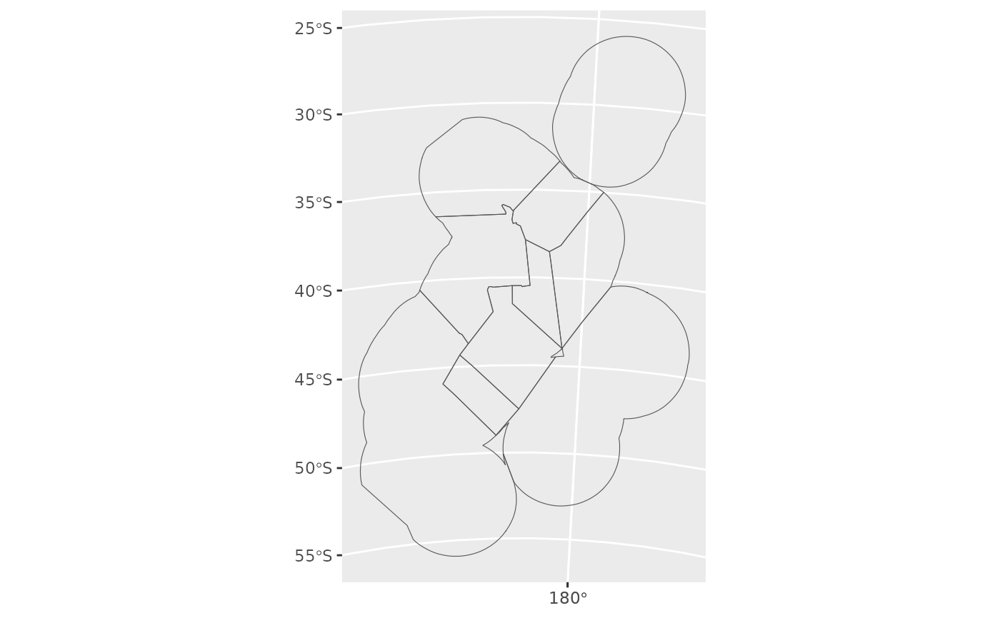
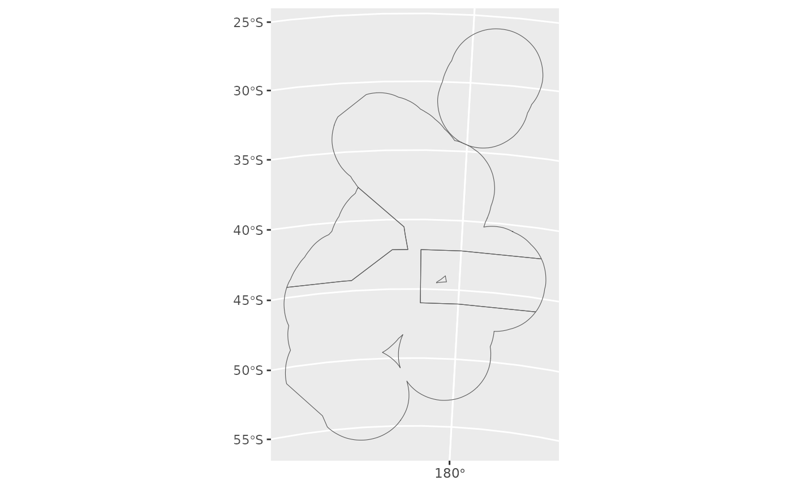
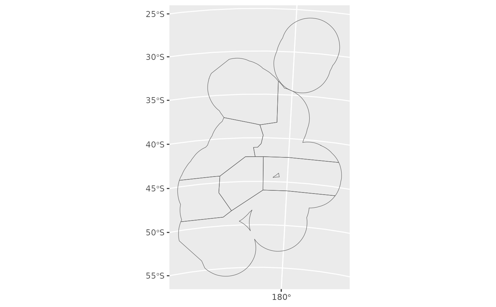

This function is used to return a Quota Management Area (QMA) as a sf object.
Arguments
- qma
A Quota Management Area (QMA). Can be CRA, PHC, COC, ...
- proj
The coordinate reference system to use: integer with the EPSG code, or character with proj4string.
Value
A simple feature collection of QMA polygons as a sf object.
See also
plot_qma to plot Quota Management Area's.
Examples
# Red rock lobster
x <- get_qma(qma = "CRA")
ggplot() +
geom_sf(data = x, fill = NA)

# Hake
y <- get_qma(qma = "HAK")
ggplot() +
geom_sf(data = y, fill = NA)

# Ling
z <- get_qma(qma = "LIN")
ggplot() +
geom_sf(data = z, fill = NA)
